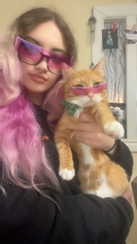
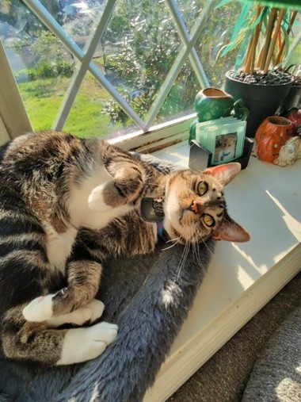
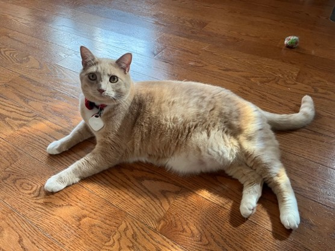
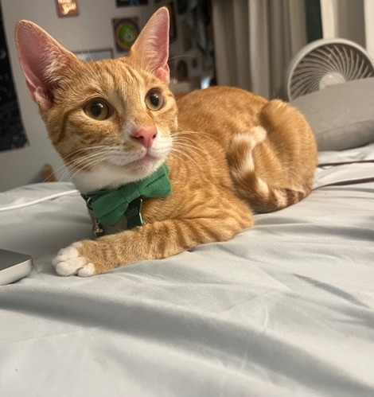

Hi, I'm Ellie! I'm a student at Syracuse University. When I'm not in class, I'm usually cooking something new, ice skating, or working on some kind of creative project. I've been a competitive figure skater for about 19 years! I'd call myself creative, adventurous, energetic, and pretty social. I love exploring new places and going to events, but I'm also just as happy hanging out with a few friends or family.
And of course, I'm a lifelong cat lover!

I have three cats at home, including one who travels back and forth to school with me.
Cooper (6 years old)

Cooper is the shy one of the group. He's incredibly loyal to his family and honestly never stops talking, but the second a new person walks in, he'll disappear until he feels comfortable enough to come say hi on his own terms. He likes his space, but he also likes being near his people, and you'll usually find him perched in his cat tree or stretched out on a windowsill.
Trey (4 years old)

Trey is the exact opposite of Cooper. He is the friendliest cat I have ever met, and he will meow his head off the second anyone comes near him, family or total stranger! He's incredibly snuggly, loves being around people, and loves to roughhouse and play with Simba and Cooper. Ask anyone who's met him: Trey loves food, sunbathing, cuddles, and a good conversation (with a lot of talking on his end).
Simba (1.5 years old)

Simba is my Emotional Support Animal (ESA), and the cat who lives with me at school and at home. He is pure chaotic energy, complete with zoomies around the apartment, but he's also incredibly affectionate and loves to snuggle. He's a total play machine who loves toys, especially anything shaped like a rat, and he loves roughhousing with the older cats when he's home for break. He's very talkative and loves meeting new people. He also travels with me to and from school every semester, and he's actually a great car passenger, if he's sitting in my lap and can look out the window before napping in my arms. I'm currently working on getting him comfortable with the outside world, since he's still young and still getting used to nature and other animals.